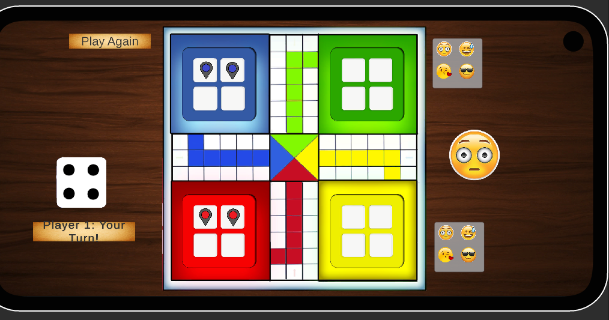
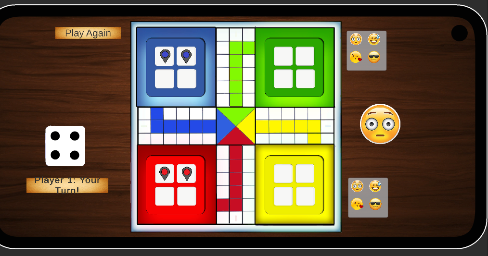

Unity FPS — Guns (Prototype)
Unity (C#)ShaderLabHLSL
What it is: A first-person shooter prototype demonstrating weapon mechanics and immersive environment design.
Highlights: custom weapon mechanics and FPS gameplay prototype; includes project settings and assets for exploring the build.
Role: Game prototype developer — weapons & gameplay systems.

 
